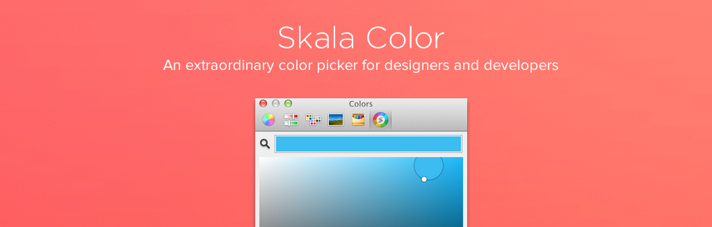

Skala Color
Plugin for mac os x color picker

Xcode မှာ Color picker ကို Apple ရဲ့ Defualt Color picker ပဲ သုံးထားပါတယ်။ Default editor ဟာ UIColor လိုမျိုးတွေ အတွက် အဆင်မပြေလှပါဘူး။ RGB အတွက် သီးသန့် code ရေးနေရတာတွေ ရှိတယ်။ အဲဒီ အတွက် Skala Color ကို အသုံးပြုနိုင်ပါတယ်။

Skala Color ဟာ Color ကို Hex, CSS RGBA, CSS HSLA, UIColor, NSColor စတာတွေကို ရွေးချယ်နိုင်ပါတယ်။ iOS development လုပ်နေတဲ့ သူတွေအတွက် အသုံးဝင်တဲ့ plugin လေးပါပဲ။